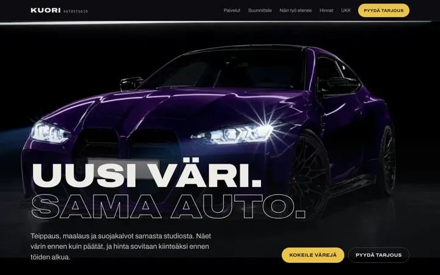
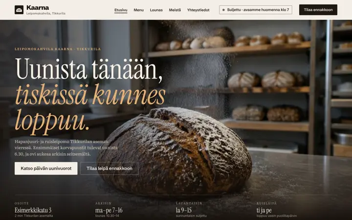
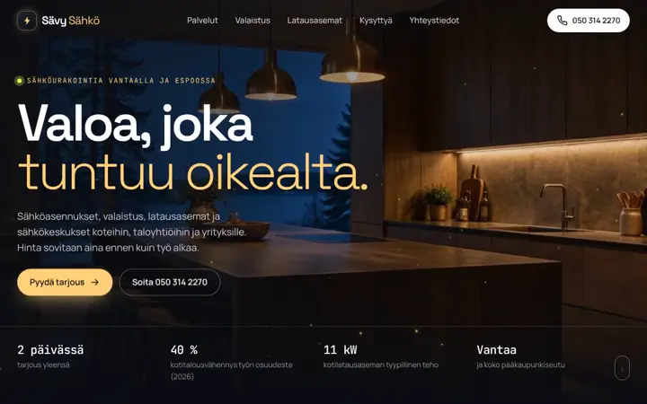
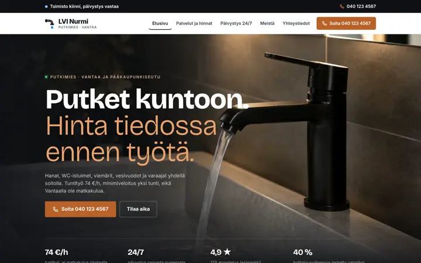

Mainostoimisto Vantaalla pienille yrityksille.
Marktic on vantaalainen kahden hengen markkinointitoimisto. Teemme pienille yrityksille kotisivut, somen, mainosvideot, Google-näkyvyyden ja mainonnan. Jokaisella palvelulla on hinta näkyvillä, eikä kuukausipalveluissa ole määräaikaa.
Mitä teemme, ja mitä se maksaa.
Hintoihin ei lisätä arvonlisäveroa, koska Marktic ei ole toistaiseksi arvonlisäverovelvollinen. Kaikki palvelut ja hinnat
Kaksi ihmistä, selkeät ehdot.
Hinnat näkyvillä
Tiedätte hinnan ennen kuin otatte yhteyttä. Kertatyöt laskutetaan vasta, kun ne ovat valmiit.
Ei määräaikaa
Kuukausipalvelut voi lopettaa minä kuukautena tahansa. Jos ensimmäinen kuukausi ei vakuuta, palautamme sen maksun.
Raportti selkokielellä
Kerran kuussa kerromme, mitä tehtiin ja mitä tapahtui, päivämäärineen ja ilman ammattisanastoa.
Mainos tuo asiakkaan, sivut ja profiili saavat hänet soittamaan.
Moni hakee mainostoimistoa, kun tarvitsee mainoksen, videon tai somejulkaisuja. Mainos kuitenkin vie asiakkaan jonnekin: kotisivuille tai Google-yritysprofiiliin. Jos sieltä puuttuu hinta, aukioloajat tai puhelinnumero, mainoksen raha menee hukkaan.
Siksi katsomme ensin, miltä yrityksenne näyttää Googlessa, kartalla ja kotisivuilla, ja korjaamme sen. Vasta sitten mainonta kannattaa. Kartoitus on maksuton, ja saatte sen kirjallisena.
Toimimme itse Vantaalla, ja moni esimerkkisivuistamme on tehty kuvitteellisille vantaalaisille yrityksille.
Emme lupaa tiettyä sijaa hakutuloksissa. Lisää meistä
Esimerkkejä Vantaalta.
Kotisivuja kuvitteellisille vantaalaisille yrityksille. Kaarnan mainosvideo ja näkyvyyden raporttiesimerkki löytyvät esimerkkisivujen sivulta.

AutoteippausKuori AutostudioVantaa · kuvitteellinen yritys
Leipomo ja kahvilaLeipomokahvila KaarnaTikkurila, Vantaa · kuvitteellinen yritys
SähköasennuksetSävy SähköVantaa ja Tikkurila · kuvitteellinen yritys
PutkityötLVI NurmiVantaa, Kerava, Tuusula, Helsinki ja Espoo · kuvitteellinen yritysUsein kysyttyä.
Paljonko mainostoimisto maksaa pienelle yritykselle?
Meillä kertatyöt alkavat 190 €:sta ja markkinoinnin kuukausipalvelut 149 €:sta kuukaudessa. Kaikki hinnat ovat näkyvillä palvelusivulla. Mainosbudjetti maksetaan suoraan Googlelle ja Metalle, eikä se sisälly hintoihin.
Onko sopimuksissa määräaikaa?
Ei ole. Kuukausipalvelut voi irtisanoa minä kuukautena tahansa, ja jos ensimmäinen kuukausi ei vakuuta, palautamme sen maksun.
Palveletteko vain vantaalaisia yrityksiä?
Emme. Kotipaikkamme on Vantaa, ja palvelemme yrityksiä koko Suomessa etänä.
Mitä eroa on mainostoimistolla ja markkinointitoimistolla?
Sanoja käytetään usein samassa merkityksessä. Mainostoimisto tekee perinteisesti mainoksia, markkinointitoimisto laajemmin kaikkea, millä asiakas löytää yrityksen. Me teemme molempia: mainokset ja videot sekä kotisivut, somen ja Google-näkyvyyden.
Lupaatteko sijoituksen Googlessa?
Emme, koska tulokset vaihtelevat. Lupaamme, että sovitut työt tehdään, ja raportoimme ne päivämäärineen.
Mistä aloitetaan?
Maksuttomasta kartoituksesta. Lähettäkää yrityksen nimi ja paikkakunta, niin kerromme kahden arkipäivän kuluessa, miten yrityksenne nyt löytyy ja mitä korjaisimme ensin.
Lähettäkää yrityksenne nimi ja paikkakunta.
info@marktic.fiVastaamme kahden arkipäivän kuluessa. Kartoitus on maksuton eikä sido mihinkään.